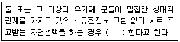
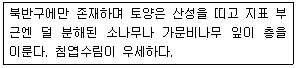
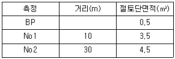

자연생태복원산업기사 (2007-09-02 기출문제)
1과목: 환경생태학개론
1. 토양 입자 사잉의 작은 공극에 채워지는 물로서 표면장력에 의해 흡수 유지되고 모세관현상에 의해 이동되며, 식물이 흡수 가능한 가장 유용한 토양수분은?
- 결합수
- 흡습수
- 모세관수
- 중력수
(정답률: 알수없음)

2. 육수생태계의 식물군락에 있어서 유형별 생활형의 설명으로 잘못된 것은?
- 수변림은 육지의 면적 오염원의 유입을 막고 가지가 수변에 그늘을 드리워 어류의 은신처가 되며 버드나무, 오리나무 등이 주요수종이다.
- 추수식물군락은 호수바닥에 뿌리를 내리고 줄기와 잎을 수면상으로 띄우는 식물로서 마름류, 수련 등이 있으며 어류, 양서류 등의 산란이나 그 새끼의 서식처로 이용된다.
- 침수식물군락은 호수바닥에 뿌리를 내리고 꽃 이외의 영양기관이 모두 수면 밑에 있으며 말줌, 말 등이 주요종으로서 수질정화 및 수서생물 서식에 기여한다.
- 부유식물은 뿌리를 호수바닥에 내리지 않고, 수면에 떠 있으며 주요 종은 개구리밥, 생이가래 등으로 질소, 인등의 흡수에 유용하다.
(정답률: 알수없음)
3. 사막에 대한 설명 중 틀린 것은?
- 연간 강유량이 25㎝ 미만인 지역이다.
- 낮과 밤의 온도 차가 30℃에 이를 정도로 기온 차가 심한 지역이다.
- 다른 생물군계에 비해 소수의 종이 살고 있으며 근본적으로 단순한 장소이므로 항상 교란되기 쉽다.
- 사막은 덥거나 또는 열대 지방에만 존재하는 생태계이다.
(정답률: 알수없음)
4. 토양침식의 원인과 대책이 옳게 짝지어진 것은?
- 과도한 경작 : 2~3년마다 콩과식물을 심고 그대로 토양에 유기물로 남겨두어 부식질의 생성을 촉진하고 영양염류의 손실을 막는다.
- 과도한 목축 : 지나친 목초의 소비가 일어나기 전에 육류의 소비를 늘려 과도한 목축을 피한다.
- 삼림의 제거 : 삼림의 개간을 막고, 주기적으로 화재를 일으켜 삼림토양의 비옥도를 높인다.
- 경작지 확대 : 표토 침식을 방지하기 위해 제초제를 사용하여 잡초를 제거한 다음 죽은 잡초의 뿌리와 줄기를 완전히 제거한다.
(정답률: 알수없음)
5. 어느 군락에서 100개체의 생물이 있다고 가정한 경우 다음 중 종다양도가 가장 높은 군락은?
- 1개종이 91개체이고 9개종이 1개체씩 구성되어 있다.
- 3개종이 20개체이고 4개종이 10개체씩 구성되어 있다.
- 7개종이 10개체이고 2개종이 15개체씩 구성되어 있다.
- 10개종이 10개체씩 구성되어 있다.
(정답률: 알수없음)
6. 다음이 설명하는 개념의 ( )안에 적합한 용어는?

- 공생
- 공존
- 공진화
- 파편화
(정답률: 알수없음)
7. 유독성 잔류물은 생물잔재에 흡수되어 작은 고기의 조직에 농축되고, 다시 물고기를 먹는 새와 같은 최종 포식자에게 농축되는 것을 생물노축현상이라고 한다. 생물농축이 가장 심한 생물은?
- 플랑크톤
- 가마우지
- 알락할미새
- 피라미류
(정답률: 알수없음)
8. 대기의 질소를 고정하는 능력이 있는 미생물 중 콩과식물과 공생하는 박테리아는?
- Azotobacter
- Clostridium
- Nostoc
- Rhizobium
(정답률: 알수없음)
9. 습지생태계에 대한 다음 설명 중 거리가 먼 것은?
- 계절적 수위 변동 구간은 습지로 보지 않는다.
- 육상생태계와 수생태계 사이의 전이지대이다.
- 수문, 토양, 식생이 습지를 판별하고 분류하는 주요지표이다.
- 부들, 달뿌리풀, 택사, 보풀, 줄 등이 분포하는 곳은 습지로 볼 수 있다.
(정답률: 알수없음)
10. 특정 군집이나 서식지의 특징을 나타내는 동ㆍ식물을 가리키는 것은?
- 생태적 내성종
- 생태적 지표종
- 생태적 제한종
- 생태적 최적종
(정답률: 알수없음)
11. 해양의 경관생태 유형 중 저질의 산소 공극률이 매우 높고, 큰 에너지 파랑의 작용이 우세하며, 매우 한정된 종들이 낮은 밀도로 서식하는 특징을 갖는 지역은?
- 자갈해안
- 암반해안
- 모래갯벌
- 사빈
(정답률: 알수없음)
12. 국제자연보존연맹에 따르면 과거 50년간 야외 조사지에서 확인이 되지 않는 종을 무엇이라 하는가?
- 절멸종
- 위기종
- 취약종
- 희귀종
(정답률: 알수없음)
13. 개체군의 생장형(生長型)이나 밀도의 형성에 있어서 출생률이나 사망률을 보충하는 개체군의 분산(dispersal) 유형은?
- 이출, 이입, 승계
- 사망, 출생, 이출
- 이입, 이출, 회귀이동
- 번식, 회귀이동, 승계
(정답률: 알수없음)
14. 교토의정서와 관련된 감축대상가스가 아닌 것은?
- CO2
- CH4
- NH4
- CFCS
(정답률: 알수없음)
15. 미국 LA 광화학 smog의 발생 메커니즘과 관련성이 없는 것은?
- 자외선
- 올레핀류 탄화수소
- 질소 산화물
- 황 산화물
(정답률: 알수없음)
16. 군집유형별 총 광합성량(P)과 총 호흡량(R)의 관계에 대한 설명 중 틀린 것은?
- 안정상태의 군집은 P/R = 1
- 독립영양군집은 P/R ＞ 1
- 종속영양군집은 P/R ＜ 1
- 소나무 조림지는 P/R ＜ 1
(정답률: 알수없음)
17. 생태계의 구성요소 중 생물적 요소가 아닌 것은?
- 생산자
- 소비자
- 무기물
- 분해자
(정답률: 알수없음)
18. 다음 중 내성의 법칙을 주장한 사람은?
- Shelford
- Liebig
- Odum
- F. Muller
(정답률: 알수없음)
19. 해조류들이 서식지의 기질에 부착하기 위해 뮤코다당류와 당단백질을 분비하고 생성하는 초기의 부착기는?
- 족사(thread)
- 근경(rhizome)
- 가근(rhizoid)
- 종말닻(terminal anchor)
(정답률: 알수없음)
20. 생태계 내에서의 에너지 이동에 관한 설명 중 틀린 것은?
- 생태계 기능을 유지시키는데 필요한 에너지의 근원은 태양에너지이다.
- 에너지는 생태계 내ㆍ외로의 유입과 유출이 자유롭다.
- 생태계 내로 유입된 에너지는 궁극적으로 생태계 밖으로 유출된다.
- 태양에너지는 대기권을 통과하는 과정에서 약 50%가 손실된다.
(정답률: 알수없음)
2과목: 환경학개론
21. 다음 중 자연 입지적 토지이용관리의 기본방향과 거리가 먼 것은?
- 자연의 가치를 이해하고 자연의 보전과 정비를 위해서는 지역주민들이 함께 노력해야 한다.
- 토지이용관리의 수단으로 다양한 유도정책과 보조 등의 수단이 아닌 규제위주로 이루어져야 한다.
- 자연환경과 관리를 위한 다양한 수단의 개발이 필요하다.
- 자연환경의 평가와 분석을 위한 합리적인 기준 및 방안이 개발되어야 한다.
(정답률: 알수없음)
22. 국토의 계획 및 이용에 관한 법률상의 용도지역이 아닌 것은?
- 산업지역
- 자연환경보전지역
- 도시지역
- 농림지역
(정답률: 알수없음)
23. 기존의 농촌계획에서 탈피하여 자연과 인간의 상호공존을 목표로 하는 생태마을의 조성에 있어 기본원칙에 해당되지 않는 것은?
- 생태적 부양능력(Ecological Viability)
- 문화적 다양성(Cultural Diversity)
- 살만한 정주환경(Liable Built Environment)
- 사회적 형평성(Social Equitable)
(정답률: 알수없음)
24. 다음 중 부문별 계획에서 고려할 수 있는 지표가 아닌 것은?
- 도시면적 대비 서식지 면적
- 전체 도시교통량 중 대중교통 분담율
- 1인당 천연가스 사용비율
- 개발지역을 감싸거나 관통하는 생태 녹지축의 존재
(정답률: 알수없음)
25. 최근 도로와 택지개발이 주요 원인이 되어 도시 및 자연 지역의 녹지축과 생태축 단절이 심각하게 발생하고 있으며 이에 대한 대안으로 녹지축 복원이나 생태통로 계획이 진행되고 있다. 이때 기본적으로 고려해야 할 사항과 거리가 먼 것은?
- 원식생의 복원과 서식처 회복
- 목표생물종의 선정과 서식처 관리
- 휴양 기회 제공을 위한 양질의 탐방로 확보
- 훼손지역 식생구조 분석과 생물이동의 모니터링
(정답률: 알수없음)
26. 다음 중 생태 네트워크 내의 비오톱 배치의 일반적인 원칙으로 옳지 않은 것은?
- 비오톱의 면적은 가능한 클수록 좋다.
- 같은 면적이라면 하나보다 분할된 것이 좋다.
- 불연속적인 비오톱은 생태통로로 연결하는 것이 좋다.
- 비오톱의 형태는 가능한 원형이 좋다.
(정답률: 알수없음)
27. 국토의 계획 및 이용에 관한 법령상 도시관리 계획결정으로 경관지구를 세분화 할 때 경관지구의 분류 유형에 해당되지 않는 것은?
- 자연경관지구
- 수변경관지구
- 시가지경관지구
- 역사경관지구
(정답률: 알수없음)
28. 도시 열성화 완화 차원에서 바람환경을 중심으로 한 도시기상, 미기후, 지리조건을 고려하여 건물, 녹지배치계획 등을 수립하고 건축규제나 도시정비 계획을 제안하는 등의 환경친화적 도시계획을 위한 환경계획은?
- 바람길계획
- 경관계획
- 공원녹지계획
- 풍치계획
(정답률: 알수없음)
29. 다음 중 습지보전법에서 습지 중 습지보호지역 및 그 주변 지역을 주변관리지역으로 지정할 수 없는 것은?
- 특이한 경관적ㆍ지형적 또는 지질학적 가치를 지닌 지역
- 희귀하거나 멸종위기에 처한 야생동ㆍ식물이 서식ㆍ도래하는 지역
- 자연생태가 원시성을 유지하고 있거나 생물다양성이 풍부한 지역
- 문화재 또는 역사적 유물이 있으며, 자연경관과 조화되어 보존의 가치가 있는 지역
(정답률: 알수없음)
30. 다음의 경우 1차 순생산량(NNP)은 얼마인가? (단, 1차 총생산량은 20000kcal이고, 식물의 호흡량은 10000kcal이다.)
- 2kcal
- 10000kcal
- 30000kcal
- 200000000kcal
(정답률: 알수없음)
31. 다음 ＜보기＞의 설명에 적합한 생물 군계는?

- 툰드라
- 타이가
- 온대활엽수림
- 온대우림
(정답률: 알수없음)
32. 국제자연보존연맹(IUCN)에 관련한 내용으로 옳지 않은 것은?
- 1948년 프랑스 정부의 주도로 설립된 비정부 간 기구이다.
- 1980년 세계자연자원보존전략을 수립하였다.
- 멸종 위기에 처한 야생 동식물의 목록인 적색 자료집(Red Data Books)를 매년 발표한다.
- 1961년 세계자연기금(WWF)을 발족시키는데 주도적인 역할을 하였다.
(정답률: 알수없음)
33. 다음 중 도립공원이 아닌 것은?
- 천마산(경기도)
- 금오산(경북)
- 칠갑산(충남)
- 선운산(전북)
(정답률: 알수없음)
34. 개체군 성장에 관한 설명으로 옳은 것은?
- 일반적으로 고등동물 개체군은 자연계에서 흔히 기하급수적으로 성장한다.
- 자원, 공간 등의 외부 요인의 제약이 없는 경우, 개체군은 기하급수적으로 성장한다.
- 기하급수적 증가모델을 S자형 모델이라 한다.
- 기하급수적 증가모델을 로지스틱 또는 시그모이드형 모델이라 한다.
(정답률: 알수없음)
35. 합리적인 지구관리 계획을 위해 지구권 - 생물권 국제공동 연구 계획(IGBP: International Geosphere-Biosphere Programme)에서 제안된 연구과제가 아닌 것은?
- 육지 생물권과 대기화학 환경과의 상호 작용
- 해양 생물권과 대기화학 환경과의 상호작용
- 질소(N) 순환과 생물권의 부영양화
- 육지 생태계의 기후변화에 따른 영향
(정답률: 알수없음)
36. 우리나라에서 생물다양성의 감소와 위협요소로 작용하는 것이 아닌 것은?
- 조경공사
- 수질오염
- 산성비
- 외래종의 도입
(정답률: 알수없음)
37. 개체군의 크기가 환경수용능력(carrying capacity)에 가까워짐에 따라 환경저항은 어떻게 되나?
- 점점 커진다.
- 점점 작아진다.
- 작아지다가 커진다.
- 커지다가 작아진다.
(정답률: 알수없음)
38. 생태ㆍ자연도 1등급 권역으로 분류하기 힘든 지역은?
- 장차 보전의 가치가 있는 2차림 산림 지역
- 생태계가 특히 우수하거나 경관이 특히 수려한 지역
- 생물의 지리적 분포 한계에 위치하는 생태계 지역
- 멸종위기 야생동식물의 주된 서식지
(정답률: 알수없음)
39. 어메니티의 개념에 대한 설명 중 틀린 것은?
- 어메니티는 총체적인 환경의 질이다.
- 어메니티는 인간이 기분 좋다고 느끼는 물리적 환경의 상태이다.
- 어메니티는 나라와 개인에 관계없이 동일한 개념을 가지고 있다.
- 어메니티는 경제적 가치를 가지는 개념이다.
(정답률: 알수없음)
40. 환경보전을 목적으로 책정되는 환경계획의 접근방법이 아닌 것은?
- 쾌적한 환경보전과 환경창조를 위한 생태, 대기, 물 등 부문 환경별 계획
- 환경친화적 행정 및 정책구조의 형성을 위한 계획
- 환경친화적인 사회기반의 형성을 위한 계획부문
- 안정적이고 지속적인 토지수급을 위한 토지이용계획 부문
(정답률: 알수없음)
3과목: 생태복원공학
41. 생물이 어느 서식장소로부터 다른 장소로 옮겨가는 것을 생물의 이동이라 한다. 다음 중 동물이 이동하는 목적으로 볼 수 없는 것은?
- 부적합한 환경을 회피하기 위하여
- 번식을 위하여
- 개체군의 분산을 위하여
- 생활사를 마감하기 위하여
(정답률: 알수없음)
42. 옥상녹화시스템의 구성 요소 중 토양여과층의 기능 및 시공시 주의사항으로 틀린 것은?
- 빗물에 씻겨 내리는 세립토양이 시스템 하부로 유출되지 않도록 여과하는 기능을 한다.
- 세립토양의 여과와 투수 기능을 동시에 만족시켜야 한다.
- 설치 위치는 시스템의 특성에 따라 다르며, 뿌리의 침투를 방지하는 방근 기능을 함께 가지는 경우도 있다.
- 옥상녹화시스템의 수분이 건물로 전파되는 것을 차단하는 기능을 한다.
(정답률: 알수없음)
43. 해안ㆍ생태계의 복원을 위한 지역구분으로 육지와 바다사잉의 이행대를 무엇이라 하는가?
- 연안구
- 조간대
- 저서환경
- 원앙구
(정답률: 알수없음)
44. 다음 산 비탈 사방녹화공사와 관련된 설명 중 틀린 것은?
- 토양침식은 우수의 침식성과 토양의 수식성(erodibility)의 관계가 크다.
- 산 비탈의 침식을 방지하기 위해서는 비탈면의 경사를 완화시켜야 한다.
- 산 비탈이 일단 붕괴를 멈추었더라도 추가 붕괴 위험이 발생할 수 있다.
- 산 비탈 사방녹화 공사를 위한 임황 조사 내용에는 지형, 지질, 토질, 토양 등이 있다.
(정답률: 알수없음)
45. 다음 토적계산표에서 BP에서 No2까지의 토적은 얼마인가? (단, 양단면적평균법을 사용한다.)
- 60m3
- 80m3
- 100m3
- 120m3
(정답률: 알수없음)
46. 다음 중 한지형 잔디 초종으로 볼 수 없는 것은?

- 톨훼스큐
- 페레니얼라이그라스
- 크리핑레드훼스큐
- 위핑러브그라스
(정답률: 알수없음)
47. 다음 중 폐광지 복원 기법으로서 복사이식(copy trans planting)을 가장 적절하게 설명하고 있는 것은?
- 대상지 인근 주변 지역에 있는 건강한 식생지역의 일정 면적을 토양(표토)부터 식생까지 그대로 옮겨주는 기법
- 식재 후 자연적인 경쟁 및 천이 등에 의해서 극상림으로 발달할 수 있도록 유도하는 기법
- 식생이 정착할 수 있는 환경만 제공하는 기법
- 산림의 종자원이 가능한 곳에서 가지치기나 다른 교란을 중지하는 기법
(정답률: 알수없음)
48. 황폐지 복구에 적합한 수종은?
- 잣나무
- 포플러류
- 상수리나무
- 물오리나무
(정답률: 알수없음)
49. Louis(1995)가 제안한 생태적 완결성의 구성요소가 아닌 것은?
- 생물할적 완결성(biological integrity)
- 화학적 완결성(chemical integrity)
- 문화적 완결성(cultural integrity)
- 물리적 완결성(physical integrity)
(정답률: 알수없음)
50. 점토의 일종으로 팽윤성이 있기 때문에 사질토의 개량에 효과가 있는 토양 개량제는?
- 펄라이트
- 버미큘라이트
- 제오라이트
- 벤토나이트
(정답률: 알수없음)
51. 다음 중 수질정화를 위한 대체습지 조성시 맞지 않는 원칙은?
- 도로변에서 유입되는 오염물질이나 유해물질을 제거하기 위한 완충지대를 조성한다.
- 자갈, 모래를 이용해 1차 정화를 하고, 수생식물을 통해 2차 정화를 한다.
- 호안의 굴곡과 깊이를 일정하게 하여 물의 흐름을 최소화하여 식물의 활착을 돕는다.
- 생물에 소음, 먼지, 진동 등의 영향을 막고, 인위적인 간섭을 막기 위한 완충지대를 둔다.
(정답률: 알수없음)
52. 적정량의 유기물은 식물생장에 필요한 요소이다. 산림 토양에서 낙엽이 분해되면서 나타나는 현상 설명으로 옳은 것은?
- 낙엽이 분해되면 토양은 점차 알칼리성으로 변한다.
- 낙엽이 분해될 때 끝까지 분해되지 않은 페놀화합물과 탄닌류는 다른 식물이나 미생물의 생장을 억제하는 타감작용(allelopathy)을 하기도 한다.
- 산림토양의 C/N율은 경작토양에 비해 높은 수준이다.
- 표토 15cm 내 유기물 함량은 산림토양이 경작토양에 비해 적다.
(정답률: 알수없음)
53. 다음 중 자연생태복원의 대상인 생물다양성과 가장 관련이 적은 것은?
- 유전자의 다양성
- 생물종의 다양성
- 생태계의 다양성
- 암석의 다양성
(정답률: 알수없음)
54. 수목의 식재기반재료로 유기질 토양개량자재들을 쓰고 있다. 다음 중 유기질 토양개량자재로 맞지 않는 것은?
- 왕겨
- 수피
- 제오라이트
- 소, 돼지, 닭 등의 분뇨
(정답률: 알수없음)
55. 복원의 목표가 되는 공간의 생태적 속성에 대한 설명 중 옳은 것은?
- 패치의 면적이 클수록 생물의 서식환경이 열악하다.
- 면적이 같을 경우 패치가 여러 개일수록 생물의 서식 환경이 비교적 양호하다.
- 패치의 면적과 개수가 같을 때는 패치 간의 거리가 멀수록 생물서식환경이 열악하다.
- 같은 면적일 때 형태가 원형에 가까울수록 생물의 서식환경이 열악한 경우가 많다.
(정답률: 알수없음)
56. 서식처 환경조건으로서 청정한 수환경 조건을 요구하지 않고, 물의 흐름이 거의 없는 유기물이 많은 논 같은 곳에서 주로 발견되는 것은?
- 버들치
- 반딧불이 유충
- 다슬기
- 달팽이
(정답률: 알수없음)
57. 우리나라 환경부에서 지정한 3대 핵심 생태축이 아닌 것은?
- 백두대간축
- 비무장지대축
- 한강축
- 도서 및 연안지역축
(정답률: 알수없음)
58. 다음 중 조사구의 설명이 틀린 것은?
- 방형구법은 면에 의한 조사방법이다.
- 벨트트랜섹트법은 띠 형태의 조사방법으로 식생변화조사에 적합하다.
- 방형구법은 군집의 분류 및 군집조사에 적합하다.
- 관목림의 조사구 크기는 대체로 100 ~ 300m2 정도로 한다.
(정답률: 알수없음)
59. 발생기대본수가 16000본/m2, 평균입수 2입/g, 순량률 40%, 발아율 50% 일 때에 파종 중량(g/m2)은?
- 4g/m2
- 3g/m2
- 2g/m2
- 1g/m2
(정답률: 알수없음)
60. 우리나라 수관 화재(crown fire) 피해지에서 맹아발생이 가장 활발한 수충은?
- 소나무
- 낙엽송
- 참나무류
- 서어나무
(정답률: 알수없음)
4과목: 생태조사방법론
61. 육상식물의 표본 추출에 가장 많이 이용되는 방법은?
- 접점법
- 측구법
- 대상법
- 선차단법
(정답률: 알수없음)
62. 어떤 개채군에서 방형구 100개의 개체수를 조사하였더니 x2값이 2.683이 나왔다. 자유도 3에서 5% 유의수준의 x2값이 7.815 이라고 했을 때 이 개체군은 어떻게 분포하고 있는가?
- 임의분포
- 규칙분포
- 집중분포
- 알 수 없다.
(정답률: 알수없음)
63. 다음은 각종의 군락에 대하여 Ellenberg가 예시한 quadrat의 크기 중 맞지 않는 것은?
- 선태군락 : 1 ~ 4m2
- 방목초원 : 5 ~ 10m2
- 건생초원 : 10 ~ 25m2
- 삼림군락 : 200 ~ 500m2
(정답률: 알수없음)
64. 생태계의 천이에 따라 기대되는 특성을 바르게 설명한 것은?
- 영양염류의 순환이 초기단계에서는 개방적이나 성숙단계에서는 폐쇄적이다.
- 생물과 환경 사이의 영양물질의 교환속도가 초기단계에서는 느리나, 성숙단계에서는 빠르다.
- 영양물 재생에 있어서 부식물의 역할이 초기단계에서는 중요하나, 성숙단계에서는 중요치 않다.
- 층상구조와 공간적 이질성이 초기단계에서는 충분히 조직화되어 있으나, 성숙단계에서는 조직화가 불충분하다.
(정답률: 알수없음)
65. 다음 목본식물의 표집방법 중 확률적으로 두 지점 간(개체-개체 혹은 조사지점-개체) 거리가 가장 먼 것은?
- 사분각법
- 최단거리법
- 인접개체법
- 제외각법
(정답률: 알수없음)
66. 토양 분류의 목(order)과 주요특징의 연결이 잘못된 것은?
- 엔티졸 : 생긴지 얼마 안되는 토양, 층의 분화가 거의 없다.
- 인셉티졸 : 습한 지역에 주로 나타난다.
- 몰리졸 : 검은색을 띄며, 유기물 함량이 높다.
- 알피졸 : 염기의 함량이 낮다.
(정답률: 알수없음)
67. 생태조사시 현장의 지형적 특성을 측정하는 기구에 해당하는 것은?
- 고도계
- 줄자
- 노끈
- 사진기
(정답률: 알수없음)
68. 육상 무척추동물의 표본 추출법 중 주의할 사항이 아닌 것은?
- 야외에서 채집한 동물은 실험실 조사를 위해서 깨끗한 물에 담구어 조사한다.
- 스위핑법의 표준화를 위해 채집자의 보폭, 걷는 속도, 휩쓰는 범위, 속도, 회수 등을 일정하게 한다.
- 포충망에 잡힌 동물을 꺼낼 때는 손상을 최소화하기 위하여 마취제를 뿌린 후 잠시 후에 동물을 꺼내어 통에 담는다.
- 스위핑(sweeping)법은 보통 절지 동물이 많이 잡히고 쌍시류(파리, 모기 등)는 잘 잡히지 않는다.
(정답률: 알수없음)
69. 생물체 건조중량의 40~50%를 차지하고 있으며, 생물지구 화학적 순환에서 가장 중요한 원소는?
- C
- O
- H
- N
(정답률: 알수없음)
70. Winkler법을 이용한 용존산소 측정을 위한 채수시 주의 사항이 아닌 것은?
- 물이 공기와 접촉하면 산소가 녹아들기 때문에 주의가 필요하다.
- 물을 채워 넘치게 하여 공기방울이 완전히 빠져 나가도록 한다.
- 물 표본 처리 과정시 직사광선을 피한다.
- 채수한 뒤에 염소를 첨가하여 보존성을 높인다.
(정답률: 알수없음)
71. 방형구법으로 조사한 어떤 종의 상대밀도(RDi), 상대피도(RCi), 상대빈도(RFi)등을 이용하여 다음과 같은 식으로 중요치(IVi)를 산정하였다. 중요치에 대하여 바르게 설명한 것은?
- 이 종의 중요치는 0~5.00 또는 0 ~500%의 범위에 속한다.
- 중요치를 산정하는 요인이 많을수록 중요치의 객관성이 낮아진다.
- 중요치는 군집 내에서 그 종의 중요성 또는 영향력을 나타내지 못한다.
- 중요치는 경우에 따라 두 가지 혹은 네 가지 요인으로 부터 산출할 수도 있다.
(정답률: 알수없음)
72. 군집 A가 25종, 군집 B가 20종이고, 두 군집에 10종이 공통으로 출현하는 종이 있을 때 군집의 유사도 분석에 관한 설명으로 틀린 것은?
- Jaccard의 유사도 지수(CJ)에서 공통종이 일정한 경우 각 군집의 종수가 많으면 유사도 지수는 늘어난다.
- 군집계수에는 Jaccard 계수와 Sørensen 계수가 있다.
- Jacdard 계수와 Sørensen 계수는 출현종의 유ㆍ무만으로 계산한다.
- Morisita 유사도 지수는 두 군집에서 랜덤하게 추출한 개체들의 동일한 종일 확률을 뜻한다.
(정답률: 알수없음)
73. 포유류의 조사 방법으로 잘 사용되지 않은 것은?
- 족적 조사
- 생포틀 조사
- 정점 조사
- 배설물 조사
(정답률: 알수없음)
74. 생태 자료수집에 앞서서 세우는 실험계획 사항이 아닌 것은?
- 표본추출의 조작
- 연구조사 자료의 분석
- 연구하려는 변수의 설발
- 연구실험 방법
(정답률: 알수없음)
75. 낙엽 분해속도를 측정하는 방법은?
- 낙엽 트랩(litter trap)법
- 낙엽 주머니(litter bag)법
- 수확법
- 명병-암병법
(정답률: 알수없음)
76. 삼림의 상대생장법에서 사용하는 상대생장식을 옳게 설명한 것은?
- 흉고직경과 수고를 상대생장식에 대입하여 현존량을 구한다.
- 흉고직경과 수고를 상대생장식에 대입하여 연순생산량을 구한다.
- 기저면적과 밀도를 상대생장식에 대입하여 현존량을 구한다.
- 기저면적과 밀도를 상대생장식에 대입하여 연순생산량을 구한다.
(정답률: 알수없음)
77. 표본 추출 방법 중 환경 조건이 뚜렷하게 둘로 나뉠 경우 이용하기에 가장 적합한 것은?
- 임의 추출법(무작위추출법)
- 계통 표본 추출법(규칙적인 추출법)
- 계층 임의 추출법
- 방형구법
(정답률: 알수없음)
78. 천이과정이 시간의 순서에 따라 바르게 연결된 것은?
- 선태군집 - 지의군집 - 초원 - 관목림 - 양수림 - 음수림 - 혼합림
- 지의군집 - 선태군집 - 초언 - 관목림 - 양수림 - 혼합림 - 음수림
- 지의군집 - 선태군집 - 초원 - 관목림 - 양수림 - 음수림 - 홈합림
- 선태군집 - 지의군집 - 초원 - 관목림 - 혼합림 - 양수림 - 음수림
(정답률: 알수없음)
79. 생물군집의 정량적 분석에서 조사되는 항목이 아닌 것은?
- 밀도
- 피도
- 빈도
- 습윤중량
(정답률: 알수없음)
80. 토성(soil texture)분석 시 눈 크기가 얼마인 체로 걸러지는 부분만을 대상으로 조사하는가?
- 1mm
- 2mm
- 3mm
- 4mm
(정답률: 알수없음)